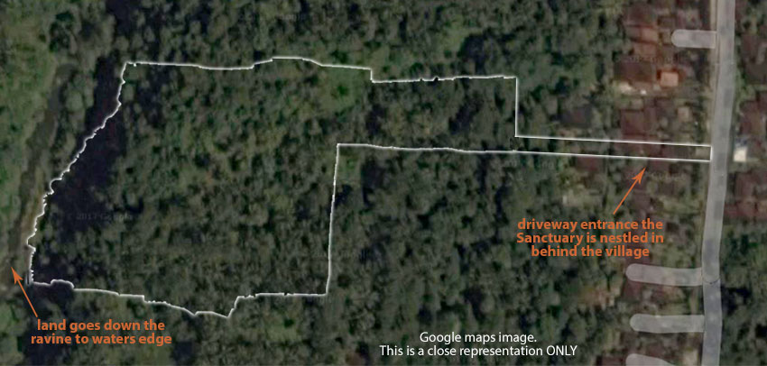

<div class="container content-md">
  <div class="row">
    <div class="col-md-3">
      <div class="headline-v2">
        
      </div>
      <ul class="nav nav-pills nav-stacked jcs-site">
        <li><a class="btn btn-link disabled" href="/plans-intro.html#page-title">Introduction</a></li>
        <li><a class="btn btn-link" href="/plans-sitemap.html#page-title">Sitemap</a></li>
        <li><a class="btn btn-link" href="/plans-entrance.html#page-title">Entrance</a></li>
        <li><a class="btn btn-link" href="/plans-pool.html#page-title">Main Pool</a></li>
        <li><a class="btn btn-link" href="/plans-studio.html#page-title">The Studio Rooms</a></li>
        <li><a class="btn btn-link" href="/plans-villas.html#page-title">The Villa Rooms</a></li>
        <li><a class="btn btn-link" href="/plans-available.html#page-title">Available Rooms</a></li>
      </ul>
    </div>
    <div class="col-md-9">
      <p>
        This section is for you to explore the site plans artist impressions and
        design images for <em>Jalan Cinta Sanctuary</em>.
      </p>
      <p>
        <strong>The Sanctuary land</strong> is nestled in the very heart of Bali – the Island of the
        Gods, as it is known – a place of supreme beauty, tranquillity, delicious
        restaurants, sensual experiences and a sacred, living spirituality.
      </p>
      <p>
        <strong>The Sanctuary buildings</strong> are emerging from pure jungle, overlooking a deep
        ravine and nestled behind a traditional Balinese village. It is accessible by
        road 15 minutes from the center of Ubud, a global hub for healing and
        awakening. Alternatively, you can take the stunning 30 minute “ridge walk” from
        the center of Ubud. This walk is planned to become one of the signature
        features of the Sanctuary: “The Miracle Walk - exploring the miracle of you”.
      </p>
      <p>
        The overall design will be a spacious mix of open-aired and
        air-conditioned rooms, pools, covered walkways, and quiet alcoves. Our
        underlying aim is to create a space of beauty and peace, for quiet ‘inner’
        times of contemplation and meditation. As well as times of laughter and song
        and dance and play! – a palpably sacred place where Love and authenticity are
        invited.
      </p>
      <p>
        <strong>The Sanctuary facilities</strong> will include a silent temple, large meeting room,
        gathering spaces, restaurant, healing and therapies spa, practitioner rooms,
        a variety of accommodation options to suit every budget, and much more.
      </p>
      <p>
        <strong>The Sanctuary villas and studios</strong> are beautifully
        designed and are being offered to leaseholders for the Sanctuary’s
        primary funding.
      </p>
      <p>
        We intend to work with the builders in a creative flow allowing each section of
        the land, each building erected, each project begun to emerge from this place
        of creativity. The project will reveal to each of us what best serves our
        purpose. Great love and care is being given to the details. Over the next few
        pages you will be able to browse through some of the features we are
        incorporating into the facilities.
      </p>

      <p>
        A key thing to remember here is that:
      </p>
      <blockquote class="hero text-center">
        <p>
          <strong>
            Entering the Sanctuary will be a choice to step consciously into the
            exploration of your own transformation, your own humanity, your own Divinity.
          </strong>
        </p>
      </blockquote>

      <!--
      <p>
        We have beautiful, architecturally designed buildings. And yet, even these
        don’t necessarily represent what the final project will look like. We intend to
        work with the builders in a creative flow allowing each section of the land,
        each building erected, each project begun to emerge from this place of
        creativity. The project will reveal to each of us what best serves our purpose.
      </p>

      <p>
        The accommodation is of three types; Villas, Studios and Pods, making
        sure that visiting the sanctuary is widely affordable. The gardens
        will be filled with both edible productive areas – to grow our own
        fruit and vegetables – and lush landscaped areas in the Balinese
        style.
      </p>

      <p>
        Great love and care is being given to the details. Over the next few
        pages you will be able to browse through some of the features we are
        incorporating into the facilities.
      </p>

      <p>
        The topography of the Sanctuary land contains a gradual slope that descends to
        the edge of the ravine and then drops off to the river below. Our architect is
        working with the natural flow of the land to maximise the experience of all who
        visit the site. The image below depicts the contour for one section. Visit the
        <a href="gallery1.html">Sanctuary Land gallery</a> for some move images.
      </p>
      -->
      <hr>
      <a href="public/img/jcs/plan/land-outline.jpg" rel="gallery" 
        class="fancybox" title="Site area">
        <span>
          
        </span>
      </a>
    </div>
  </div>
</div>


